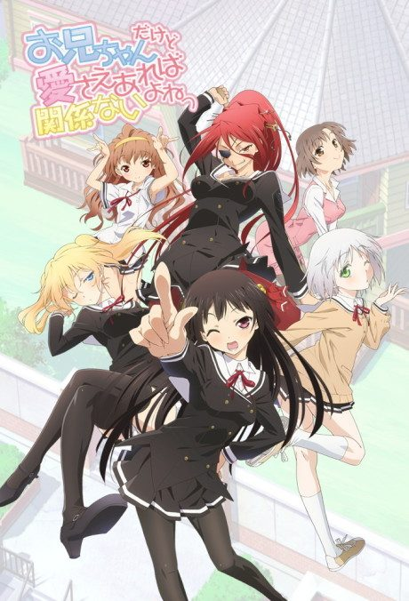
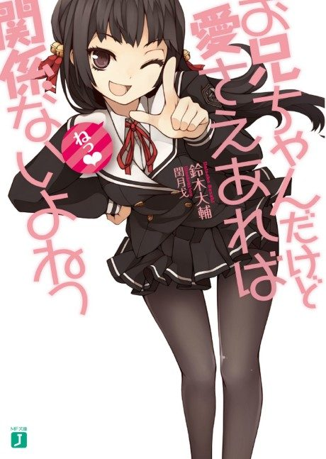

OniAi
お兄ちゃんだけど愛さえあれば関係ないよねっ
Akiko is reunited with her older brother, whom she loves a little too much, but other girls are after him too.
After the anime, read the light novel from Volume 5.
6.0AniList score
—Animeter, no votes yet
12episodes
Rate it or report where you stopped
Anime finished. Where does the story go next?
Start at Volume5
The anime covers the first four volumes, so start at volume 5. The final episode rearranges events and adds original material, but the novels continue directly into the next arc.
1412 end
Season 1Start reading here